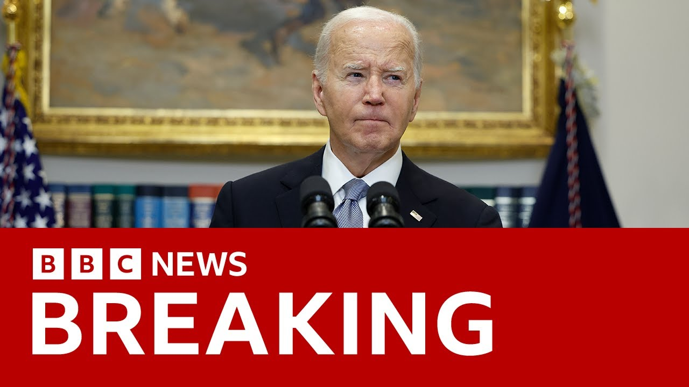

【乔·拜登被诊断患有“侵袭性”前列腺癌，其办公室表示 | BBC新闻】
Summary: President Biden has been diagnosed with metastatic prostate cancer that spread to his bone, according to his office, raising concerns about his health and treatment plans.
摘要： 据拜登办公室称，总统拜登被诊断出前列腺癌已转移至骨骼，引发对其健康状况和治疗方案的担忧。

⏱️ Estimated Reading Time: 6 min
Uh let's return to that breaking uh news that President Biden has been diagnosed with prostate cancer with metastasis to the uh bone.
我们回到突发新闻，总统拜登被诊断出前列腺癌已转移至骨骼。
That's according to a statement from his office.
这是根据其办公室的一份声明。
Well, let's go to um our North America correspondent Jake Quan now.
现在，让我们连线北美记者杰克·权。
So Jake, uh can you just give us a bit more detail around this breaking news?
杰克，你能为我们详细介绍一下这则突发新闻吗？
There's actually very little detail available from the statement we received from former President Joe Biden's office.
我们从拜登办公室收到的声明中实际上细节很少。
uh he has went to the hospital uh to get examined and the doctors have discovered uh a prostate cancer uh in the biopsy that they have taken uh and that this this cancer they appears to be a more aggressive form of cancer that it had spread to his bone which is uh not a very good sign.
他前往医院检查，医生在活检中发现前列腺癌，且这种癌症更具侵袭性，已扩散至骨骼，这不是一个好迹象。
So what happened a little bit ago was that last week Mr. Biden was uh having some trouble.
不久前，拜登先生上周出现了一些问题。
he had increasingly more and more urinary uh problems and then he went to a hospital in Philadelphia where the doctors have taken a sample of him and they discovered that there was a small nodule a little bump in his uh prostate.
他的泌尿问题越来越严重，随后前往费城一家医院，医生取样后发现其前列腺有一个小结节。
So they took his sample and on Friday past Friday they have discovered that it was in fact uh cancer and uh this cancer had metastasized to his bone which usually means that it is it is incurable at this point.
他们取样后，上周五确认这实际上是癌症，且已转移至骨骼，通常意味着目前无法治愈。
It is quite advanced.
病情已相当严重。
I mean, Mr. Biden is uh is he's 82 and this is actually not his first time uh dealing with cancer.
拜登先生已82岁，这并非他首次患癌。
Two years ago, he was treated for uh skin cancer as well.
两年前，他还接受了皮肤癌治疗。
And prostate cancer is something that is actually very common uh for Americans who are reaching a more advanced age like Mr. Biden.
前列腺癌在像拜登这样高龄的美国男性中非常常见。
Uh after after skin cancer, prostate cancer is the second most uh common form of cancer for men in the United States.
在皮肤癌之后，前列腺癌是美国男性第二常见的癌症。
And it also happens to be the second most deadly uh form of cancer for men in the United States.
它同时也是美国男性第二致命的癌症。
So the doctors and the the family of Mr. Biden uh will be discussing on what to do uh the treatment plans uh in the in the coming future.
因此，医生和拜登的家人将讨论未来的治疗方案。
And that's uh that's what we have learned just just a little bit ago.
这是我们刚刚得知的消息。
And we know, don't we, Jake, that um it it's what nearly a year um after the former president was forced to drop out of the um US presidential election that was over concerns about his health and his age.
我们知道，近一年前，这位前总统因健康和年龄问题被迫退出美国总统选举。
That's correct.
确实如此。
There has been a lot of uh concerns, a lot of talks around his health.
外界对其健康状况有很多担忧和讨论。
Uh there was that quite a quite apparent uh cognitive decline that was happening uh after his uh quite frankly an awful debate performance against uh President Trump where he seemed to forget his uh his uh the track of his thoughts.
在与特朗普总统的糟糕辩论表现后，他的认知能力明显下降，似乎思维混乱。
Uh he's for seemed to forget the names.
他似乎忘记了名字。
Uh he seemed to misspeak multiple times during the performance.
他在辩论中多次说错话。
Uh there were also uh speeches where he seemed to also forget some of the names or people that were very close to him.
在一些演讲中，他似乎还忘记了一些亲近的人的名字。
Uh we also heard reports that at one point while he was on a on a fundraising campaign, he seemed to forget uh the face of George Clooney, the Hollywood actor who is likely one of the most famous person uh in the world.
有报道称，在一次筹款活动中，他似乎忘记了乔治·克鲁尼的长相，后者是全球最知名的人物之一。
Uh so all these things were were happening and which kind of added to the mounting pressure uh for him to drop out and to really yield uh space for Camela Harris and and this is something that we have seen uh in the in the last uh election cycle and uh there was a lot of talk about his his health uh when he was appearing for for uh a series of interviews he has also done with the BBC and Mr. Biden also seemed uh quite frail.
这些事件加剧了他退选的压力，为卡玛拉·哈里斯让路，我们在上次选举周期中看到了这一点。他在接受BBC采访时也显得非常虚弱。
His voice was no longer uh very strong.
他的声音不再有力。
Um and his his general health decline was becoming very visible.
他的整体健康状况明显恶化。
So I think a lot of people seeing the the news from last week that he was going in for a biopsy uh that that this nodule was discovered.
因此，许多人看到他上周接受活检并发现结节的消息后感到担忧。
I think a lot of people had concerns for his health uh and people had hoped for the best uh but it is unfortunate that this news came today.
许多人对其健康感到担忧，尽管希望有好结果，但今天的不幸消息令人遗憾。
Okay, Jake, thank you very much.
好的，杰克，非常感谢。
That's Jake, our North America correspondent there.
这是我们的北美记者杰克。
And as you can see on your screen, there's a QR code that you can scan uh to read uh the full story um about uh President Biden's cancer diagnosis.
屏幕上有一个二维码，扫描后可阅读关于拜登总统癌症诊断的完整报道。